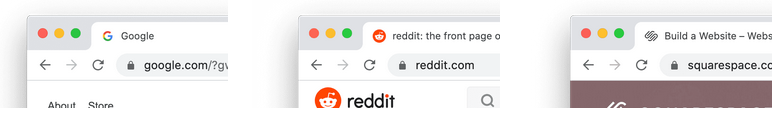
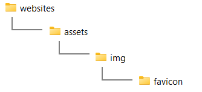

Learning Goals
At the end of this Tutorial, you will be able to:
- Creating a favicon with using an online service.
- Inserting a favicon into the header of a web page.
About favicons
A favicon is a small icon (really a set of icons for different screens) that is displayed in a browser's tab, address bar, bookmarks, and sometimes within search results. See the examples below.
Favicons help users quickly recognise and differentiate between websites.
Benefits of using a favicon
- Brand Recognition: A favicon reinforces brand identity by showing a small logo or recognisable image that aligns with the website’s branding.
- Improved User Experience: Favicons make it easier for users to identify and switch between open tabs, especially when they have multiple tabs open.
- Professional Appearance: A favicon gives a website a polished and complete look, adding to its overall credibility and professional feel.
- Increased visibility in bookmarks and search: When users bookmark a site, the favicon appears alongside the site name, making it easier to locate. Some search engines also display favicons next to results, enhancing the website's presence.
Need for different versions of a favicon
A single favicon size may not suit all devices and operating systems. Therefore, multiple versions of a favicon image are necessary:
- Different sizes: Standard favicon sizes include 16x16, 32x32, 48x48, and larger resolutions like 180x180 for high-resolution displays. A variety of sizes ensures that the icon looks sharp and correctly scaled on different devices.
- Different formats: Common formats include .ico, .png, and .svg. The .ico format is widely used for desktop browsers, while .png is often used for mobile and high-resolution screens. Apple devices typically require a 180x180 PNG file, and Windows provides a way to customize the tile icon on its Start screen with specific image formats.
- Support for pinned and saved icons: Apple and Android devices may display website icons in shortcuts or app-like tiles when users add a website to their home screens. These icons often require specific dimensions and formats to look appealing.
Including multiple versions of a favicon allows a website to adapt to different contexts, providing a consistent and high-quality visual experience across all devices and platforms.
Adding a favicon
Follow the steps below:
- In the assets/img sub-folder of your 'main' folder, create a new sub-folder named favicon. 
- Create a square PNG image of at least 260x260 pixels. For best results, use an image of 512x512 pixels. This ensures the image can downscale to other dimensions for different platforms. For example:

- Go to the free Favicon Generator website at the following web address: https://favicon.io
- Choose the PNG -> ICO option.

- On the next screen, drag-and-drop the image you want to use as your favicon, and then click the Download button.
- Copy your downloaded ZIP to the assets/img sub-folder of your 'main' website folder.
- Unzip the ZIP file to create the following files.
- android-chrome-192x192.png
- android-chrome-512x512.png
- apple-touch-icon.png
- favicon-16x16.png
- favicon-32x32.png
- favicon.ico
- site.webmanifest
- Copy-and-paste the following code to your 'home page' page, to just below the description meta tag in the head.
<link rel="apple-touch-icon" sizes="180x180" href="assets/img/favicon/apple-touch-icon.png"> <link rel="icon" type="image/png" sizes="32x32" href="assets/img/favicon/favicon-32x32.png"> <link rel="icon" type="image/png" sizes="16x16" href="assets/img/favicon/favicon-16x16.png"> <link rel="manifest" href="assets/img/favicon/site.webmanifest">
Uploading your files to GitHub
After finishing your web pages and stylesheets, you are now ready to upload them to your account on GitHub.
- Open a new tab in your web browser and go to GitHub.com. If you are not already signed in to your GitHub account, sign in now.

- On your GitHub home page, click the ‘repo’ that holds your web pages. Its name will look as follows, where username is your chosen username on GitHub.
username.github.io

- On the next GitHub screen displayed, near the right of the screen, you can see a button named Add file. Click on it.

- From the dropdown list displayed, choose the option Upload files.

- In File Explorer (Windows 11) or Finder (Apple Mac), drag-and-drop your 📄 index.html file and your 📁 assets and 📁 exercises sub-folders to upload them to your repository on GitHub.

- Scroll down to the bottom of the GitHub screen, and accept or edit the short message (Add files via upload) in the Commit changes box.
- Finally, click the green Commit changes button to upload your files.

Your updated home page and four new web pages are now published on GitHub at web addresses similar to the following:
https://username.github.io/index.html
https://username.github.io/exercises/page-4.html
https://username.github.io/exercises/page-5.html
https://username.github.io/exercises/page-6.html
https://username.github.io/exercises/page-7.html
It may take a few minutes for your uploaded files to appear on GitHub.